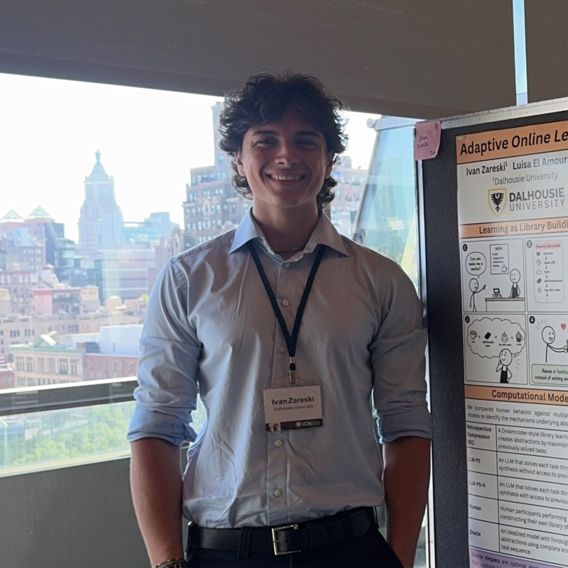
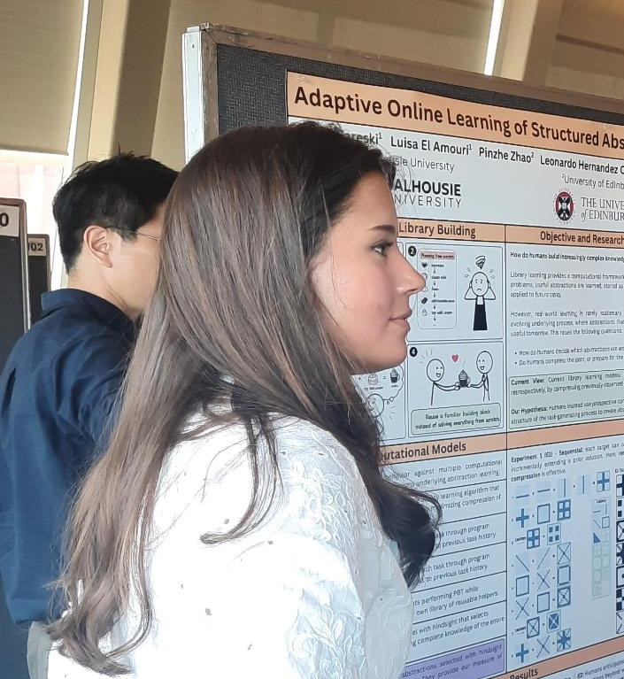
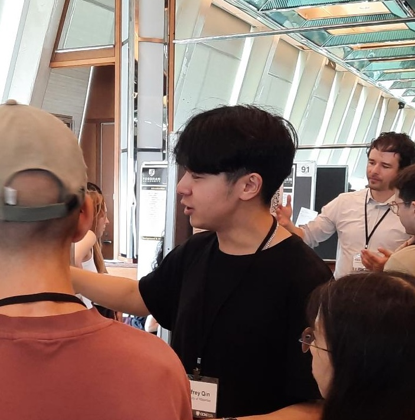

Principal Investigator
We study how humans and artificial agents learn, reason, explore, and build models of the world. Our work combines computational cognitive science, artificial intelligence, and behavioral experiments.
Lab Members
MSc Student
Policy compression in online learning

Ivan ZareskiUndergraduate
Representation learning

Luisa El AmouriUndergraduate
Representation learning

Jeffrey QinUndergraduate (University of Waterloo)
World model discovery, planning
Undergraduate
Experiment infrastructure
Research Assistant (ICL)
Experiment infrastructure
PhD
Modelling human music perception
Research Collaborators
We collaborate with researchers across cognitive science and artificial intelligence.
- Cole WyethUniversity of Waterloo
- Leonardo Hernández CanoMIT
- Bonan ZhaoSchool of Informatics, University of Edinburgh
- Emanuele SansoneMIT
- Yewen PuNanyang Technological University
- Kevin EllisCornell
Joining the Lab
We welcome inquiries from research-oriented students interested in computational cognitive science and AI. Strong candidates are self-motivated and have quantitative research experience and an interest in developing computational models, running behavioral experiments, or both.
Undergraduate students do not need prior experience with all of these methods, but should have a strong interest in research, be willing to learn technical skills, and be able to work independently.
If you are interested in joining the lab, please email me with a brief description of your research interests, why you think there is a good fit with the lab, and your CV. We do not respond to AI-generated emails.